Vetorização técnica · AutoCAD Civil 3D
Projetos rodoviários, topografia e infraestrutura. Atendimento 100% remoto, com organização e padronização técnica para empresas e profissionais do setor.
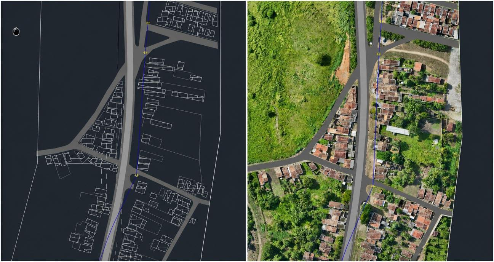
Atuo com vetorização de ortomosaicos no AutoCAD Civil 3D, desenvolvendo serviços voltados para projetos rodoviários, topografia e infraestrutura.
Trabalho de forma remota, prestando apoio CAD para empresas e profissionais do setor, priorizando organização, padronização técnica e agilidade nas entregas.
Técnico em Agrimensura, com experiência em atividades de campo e apoio técnico.
A atuação prática na área contribui para maior compreensão técnica na interpretação de ortomosaicos, organização de elementos topográficos e desenvolvimento das vetorizações em AutoCAD Civil 3D.
Experiência em serviços desenvolvidos para empresas do setor de topografia e engenharia, incluindo trabalhos realizados para a Voetopo.
O que eu faço
Transformação de imagens aéreas em desenhos vetoriais precisos no AutoCAD Civil 3D.
Detalhamento de bordos de acesso, rodovias e estradas de chão.
Detalhamento em polilinhas de cercas, muros e edificações.
Identificação e estruturação de elementos do ambiente urbano e rural.
Classificação das informações por camadas para visualização clara e trabalhos futuros.
Antes & depois
Arraste o slider para comparar a imagem aérea original com a vetorização técnica em AutoCAD Civil 3D.
Mais de 78 km de rodovias já vetorizadas e entregues.
Experiência acumulada em trechos rodoviários de diferentes contextos — áreas urbanas, rurais, industriais e faixas de domínio — sempre com a mesma padronização técnica.
Vetorização de cercas e divisas — polilinhas detalhando cercas, muros e edificações.
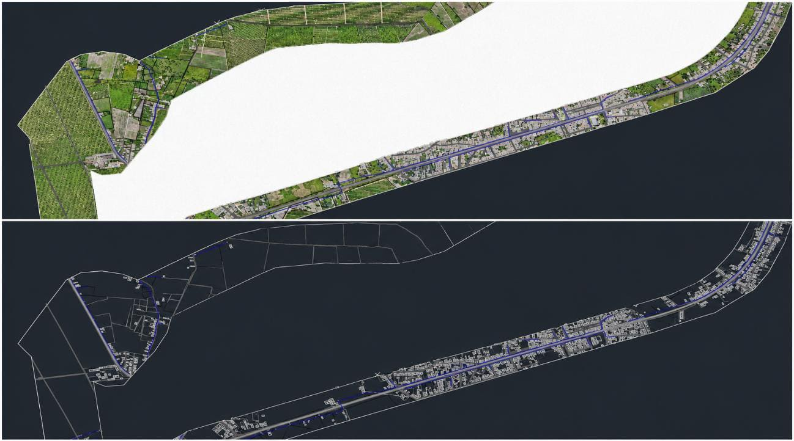
Delimitação de vias e acessos — projeto de nova rodovia na região de Sergipe.
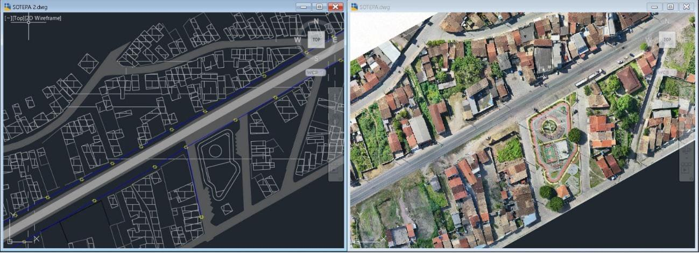
Extração de elementos urbanos — quadras, vias e edificações detalhadas.
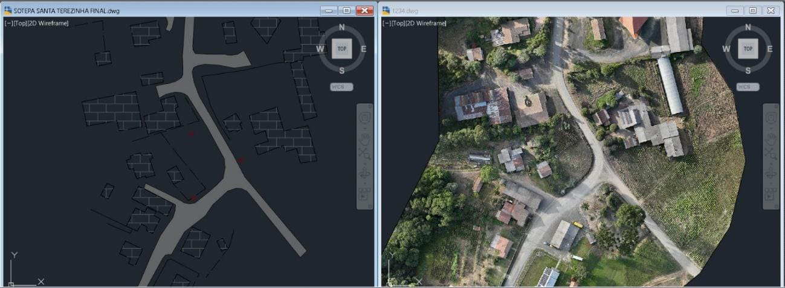
Extração de elementos rurais — glebas, acessos e construções rurais.
Trechos entregues
Amostras reais de diferentes trechos vetorizados, cobrindo desde faixa de domínio até edificações, postes, cercas e infraestrutura urbana ao longo da via.
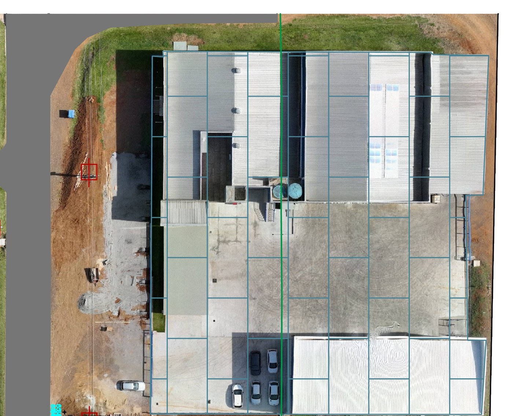
Galpões e edificações próximos à rodovia — contornos detalhados em polilinhas por módulo construtivo.
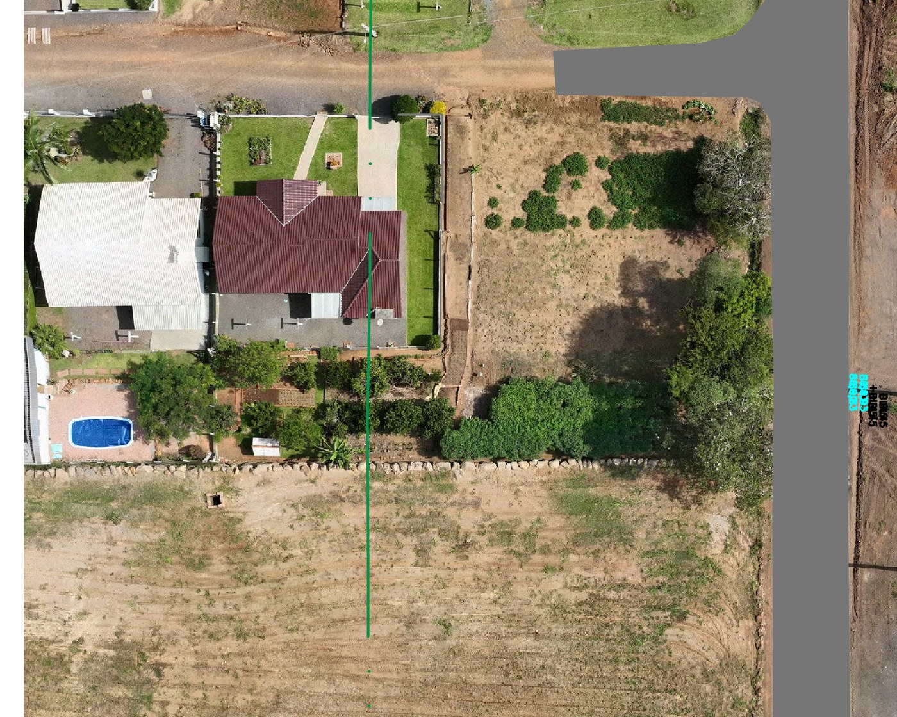
Eixo de rodovia e edificações residenciais — bordo de via e elementos adjacentes mapeados.
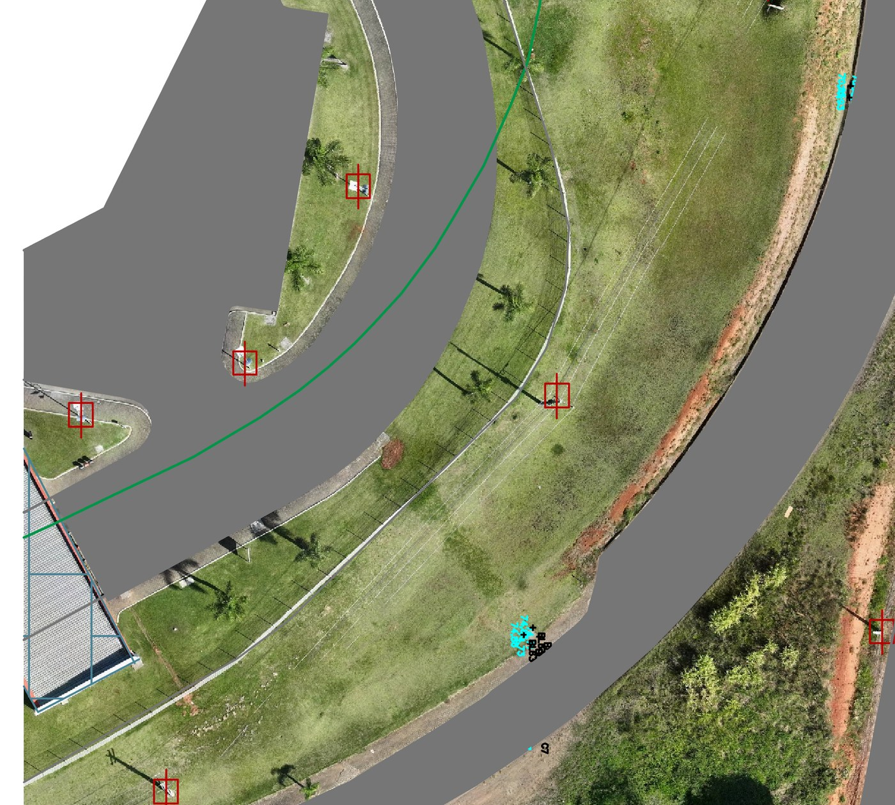
Faixa de domínio de 30 m da BR — eixo da via, postes e elementos de apoio georreferenciados.
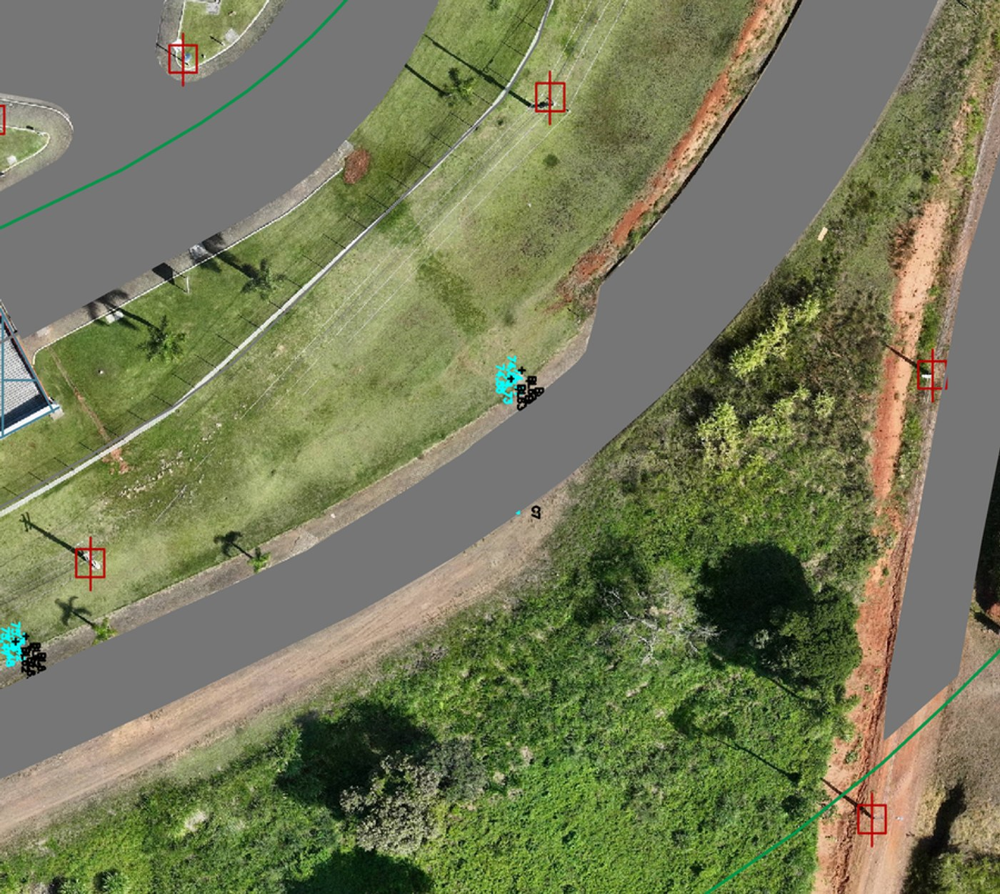
Acesso rural e galpão dentro da faixa de domínio — detalhamento de contornos e divisas.
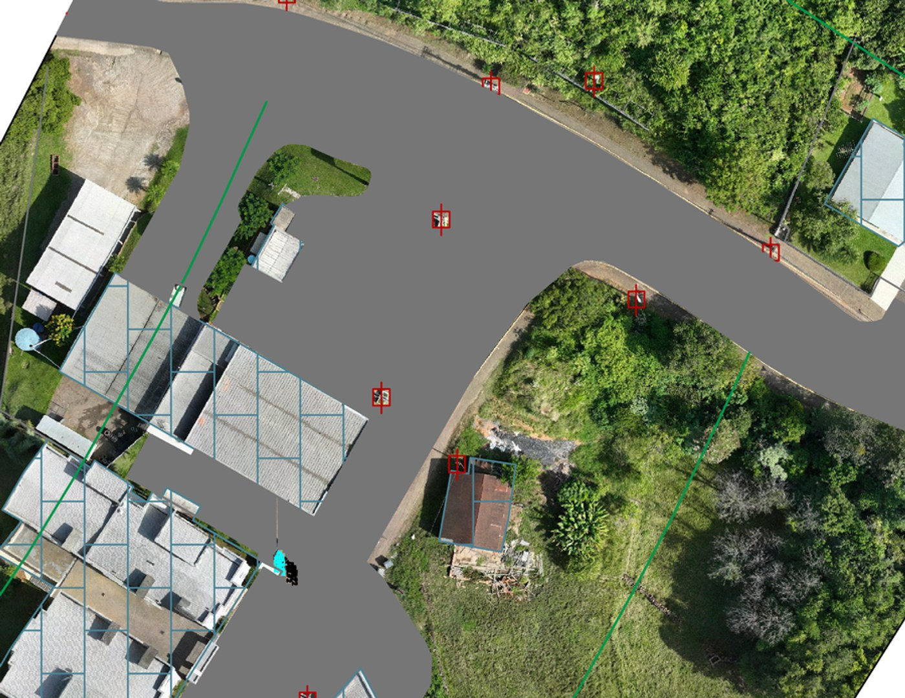
Estrada próxima a indústrias e comércios — galpões, acessos e cobertura comercial detalhados.
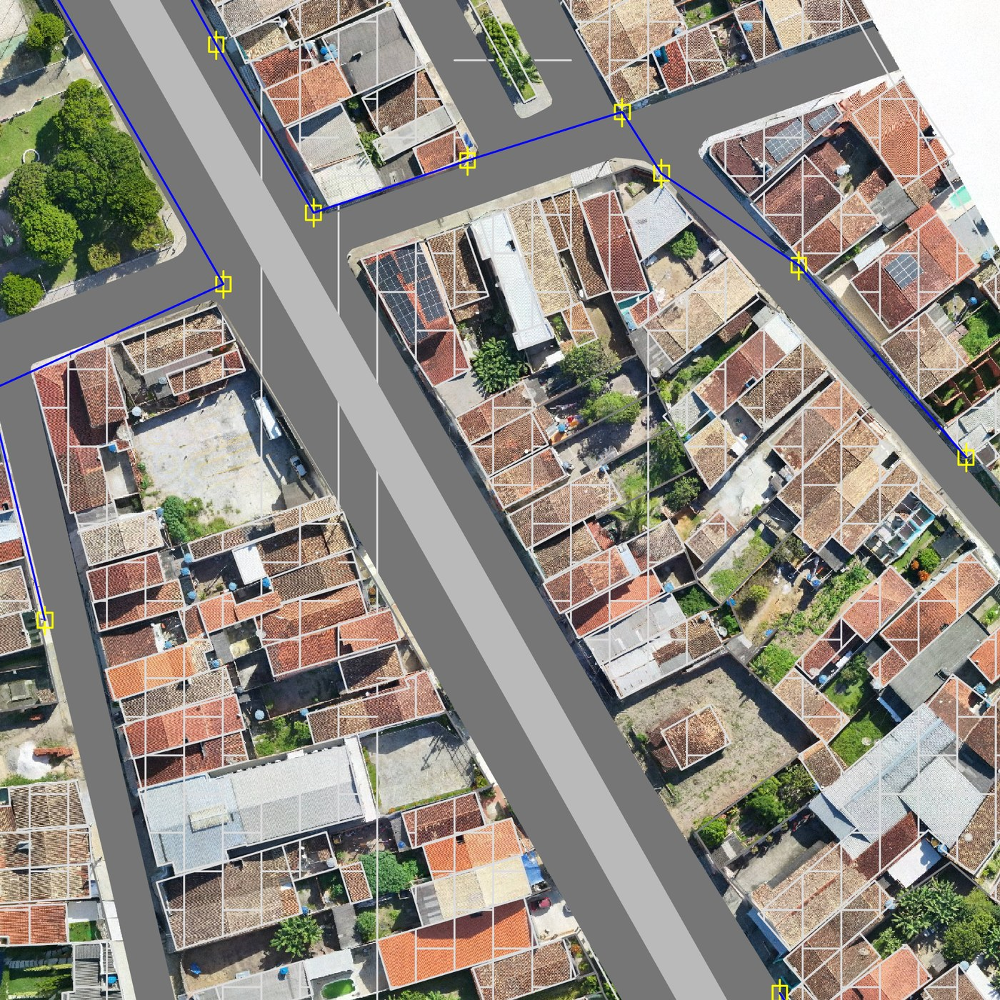
BR em perímetro urbano — todas as edificações vetorizadas em faixa de 100 m para cada lado da via.
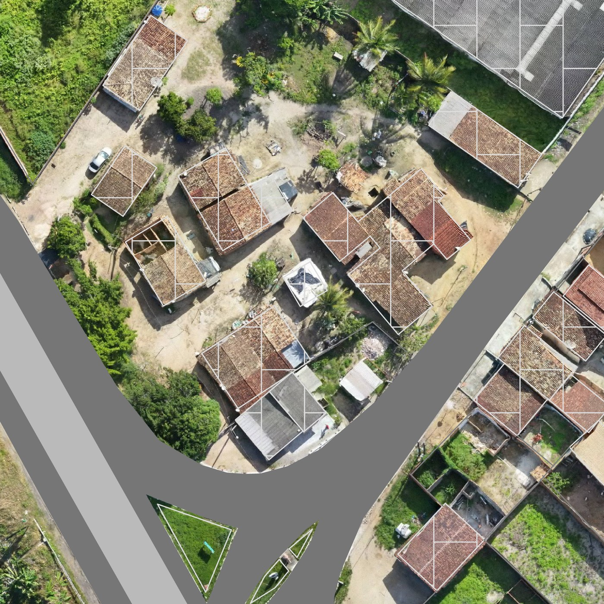
Acesso de rodovia — edificações, postes e rede de energia detalhados ao longo da via.
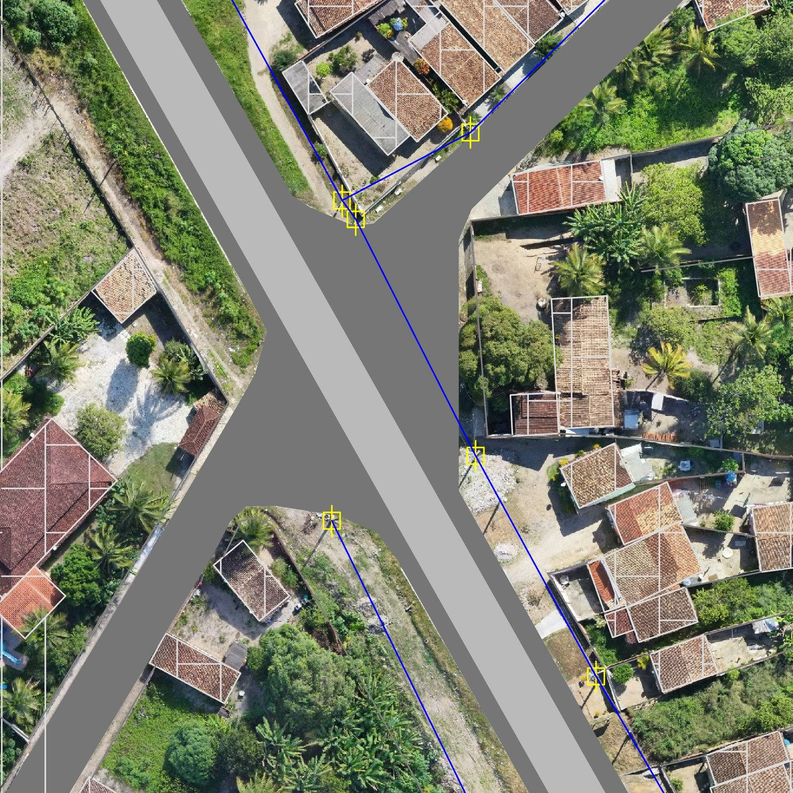
Cruzamento de vias — muros, edificações, postes, cercas, acostamento e bordo da BR mapeados.
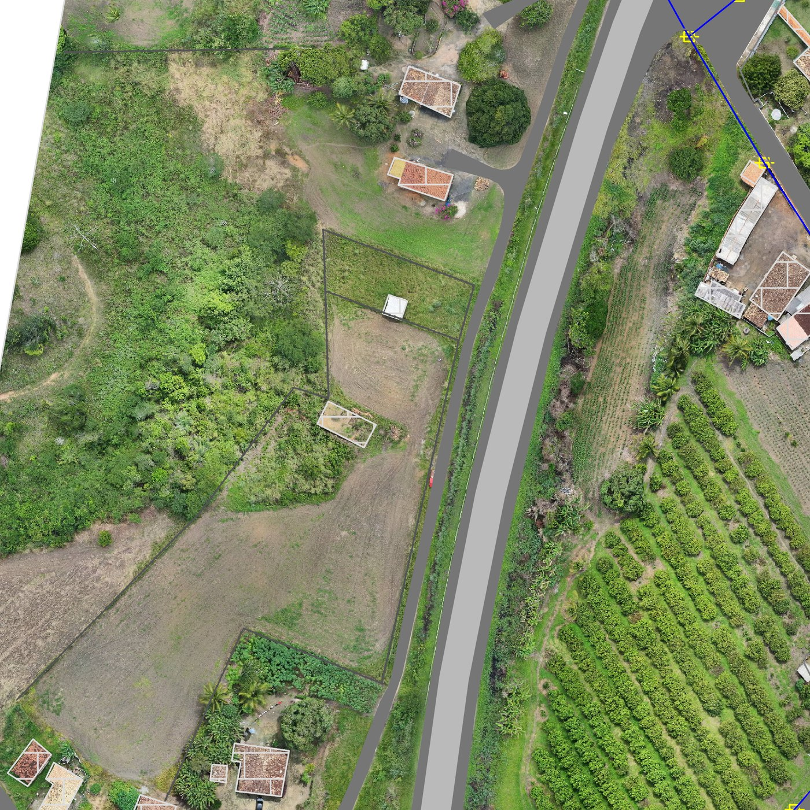
Levantamento ao longo da rodovia — linhas de postes, edificações, bueiros, quadras e acessos.
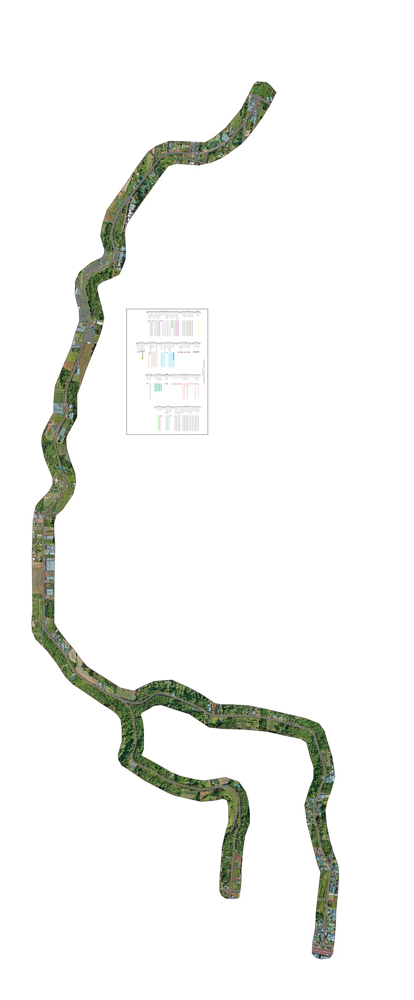
Padronização técnica
Todas as vetorizações seguem uma estrutura de camadas (layers) padronizada conforme as normas técnicas da ABNT para representação topográfica, garantindo que qualquer equipe de engenharia consiga abrir o arquivo e reconhecer imediatamente cada elemento.
DP — Detalhes planimétricos
Edificações, alta-tensão, antenas, reservatórios, parques
DI — Divisas
Cercas de arame, tela, viva e mista, muros, tapumes
SV — Sistema viário
Eixo de via, bordo, acostamento, calçada, meio-fio, ciclovia
IU — Infraestrutura urbana
Bueiros, galerias, poços de visita, adutoras, fibra ótica
EU — Equipamentos urbanos
Postes, luminárias, hidrantes, torres, estações de energia
HD / HG / HM — Hidrografia e relevo
Cursos d'água, curvas de nível, cotas, marcos topográficos
ED — Edificações
Alvenaria, madeira, mista, ruínas — por tipo construtivo
VE / OA / SI — Vegetação, obras e sinalização
Árvores, culturas, pontes, viadutos, placas e sinalização
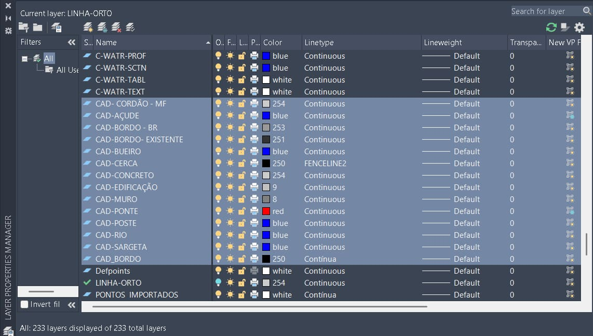
Por que trabalhar comigo
Como funciona
Vetorização técnica do ortomosaico conforme escopo do projeto.
Estruturação de layers e nomenclatura alinhadas ao padrão exigido.
Entrega rápida e segura dos arquivos finais, prontos para uso.
3–7 dias
Pequenas demandas
Sob análise
Projetos médios
Cronograma
Grandes áreas
Fale diretamente comigo e receba um orçamento rápido para sua demanda de vetorização.
Instagram / LinkedIn: @leonanm0ura